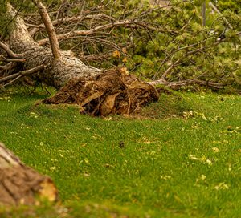

he fury of Mother Nature strikes in the form of storms often in the fall in our area. These storms can leave behind a trail of destruction. Trees, especially, are at risk of major damages which don’t only affect themselves. Storms can uproot trees, break branches, and even damage power lines, turning these beautiful natural assets into potential hazards to people and property. This is when you need professional help from a tree company in Smithville like Ben Bivins Tree Experts. Storm clean-up and post-storm Smithville tree services are just two of the important benefits we provide for our community. In this blog post, we’ll explore the importance of prompt storm clean-up and the essential services offered by tree care professionals like ourselves.
The Aftermath of a Storm
Storms can leave your landscape in disarray. High winds often leave yards covered with fallen trees and debris. This not only affects the aesthetic appeal of your surroundings but also poses safety risks to your family and neighbors. Fallen trees can damage homes, vehicles, and power lines, creating further complications. Proper tree pruning can reduce the risk of storm damage by removing weak or dead branches and improving the tree’s overall structure and stability. If your trees have structural weaknesses, installing cables and braces to support branches can reduce the risk of breakage during storms.
Immediate Response is Crucial
In the wake of a storm, immediate action is crucial. This is where a reputable tree company comes into play. Their team of skilled arborists and tree service professionals understands the urgency of the situation. They respond promptly to assess the damage and prioritize the safety of your property and the community. Emergency tree removal is often necessary after a storm. Damaged or uprooted trees can be unstable and pose significant risks. Tree care professionals assess the situation, determining the best approach to safely remove the trees. This may involve the use of cranes and specialized equipment to dismantle and remove the tree in sections, ensuring the safety of all involved.
Property Cleanup is One Essential Smithville Tree Services
Beyond tree removal, tree experts take care of the debris cleanup. They work diligently to clear your property of fallen branches, leaves, and any other storm-related mess. This not only restores the beauty of your landscape but also ensures that your outdoor space is safe for your family and visitors. Tree service companies clear underbrush, shrubs, and small trees to create cleaner, more usable outdoor spaces. This service is often sought after for property development or fire prevention. Once a tree has been removed, the stump remains in the ground. This can be an eyesore and an obstacle for landscaping. Stump removal and grinding services eliminate these remnants, allowing for smooth and clean property use. Lastly, after a storm, tree service professionals like ourselves assist in clearing debris such as fallen branches, leaves, and other tree-related mess from your property by hauling away the debris or chipping it into mulch.
Keep Our Number Handy for Smithville Tree Services

When storms wreak havoc on your landscape, you don’t have to face the aftermath alone. As a professional tree company specializing in storm clean-up and tree services, let us be your lifeline. Our swift response, expertise, and commitment to safety ensures that your property is not only restored, but better prepared to weather future storms. A tree service with local knowledge is often better equipped to understand the specific tree species and weather conditions. This can be very beneficial for effective storm protection. Remember that proactive tree care and maintenance are key to reducing the risk of storm damage. The best tree company not only responds to emergencies but also provides ongoing care to keep your trees healthy and resilient in the face of adverse weather. So, the next time nature tests your landscape, remember that there are experts ready to help you restore beauty and safety to your surroundings.